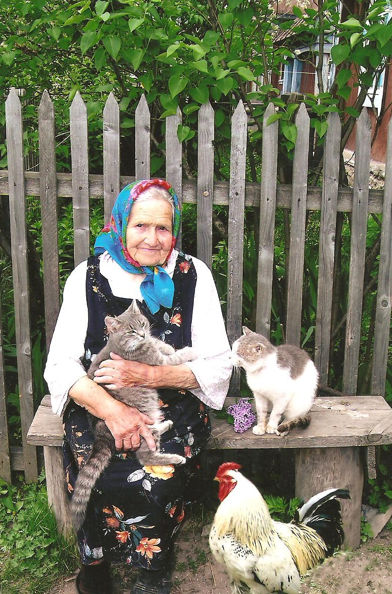
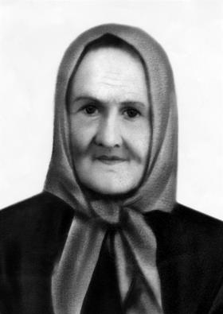
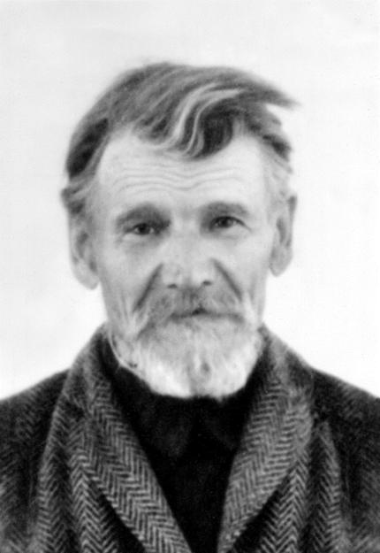
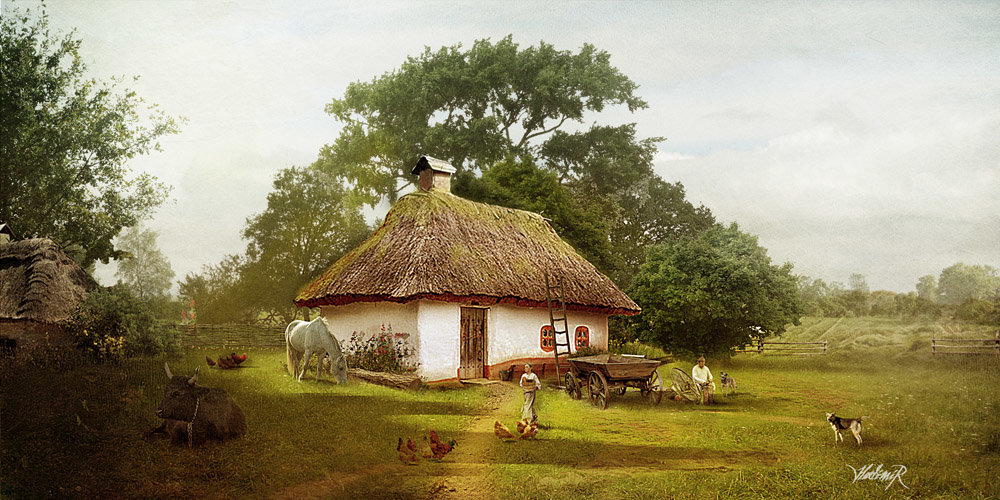
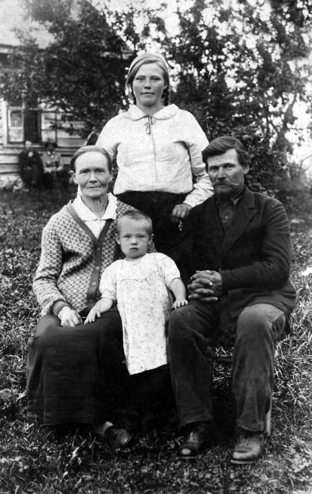
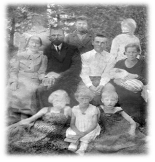

Перевалова
Эльза Антоновна (Стрелис)
25(27).05.1915 - 27.09.2007
27 сентября День семейной памяти Эльзы Антоновны Переваловой (Стрелес) - удивительного человека с трудной судьбой, опаленной двумя войнами, трагическим для страны годами, посвятившего свою жизнь родным и близким, счастью нашей семьи. Родилась 25(27) мая 1915 года на хуторе Бривайс Дарбс, Покровского села, Иглинского района (в дальнейшем), Уфимского уезда в Башкирии.
Родители Эльзы Антоновны : выходцы из латвийских наемных сельхозработников (батраков), в начале ХХ скопив деньги, приехали в царскую Башкирию на свободные и дешевые земли в период земельных реформ в Российской империи. К этому времени переселенцами были уже освоены хутора: Ауструм, Балтика. В них Антон и Анна раздельно проживали и трудились , а затем создали семью и организовали вместе с другими земляками в живописном месте новый хутор Бривайс Дарбс (Свободный труд). Там же родились три дочери : Лида -1910г., Эльза -1915, Марта -1919г.

Граудиня Анна 1875 г.р
(Оценочно)

Стрелис Антон(Ансис) Иванович
1885 г.р
На следующих фото мы можем увидеть построенные тяжелым трудом хутора и гармоничный быт латвийских переселенцев в конце ХIХ и начале ХХ века. В семье с детских лет много трудились, а вечерами и в праздники у костра исполнялись латышские и русские песни, звучала классическая скрипичная музыка. Музыкальный багаж семьи насчитывал около 150 песен, стихотворений и музыкальных произведений на латышском и русском языках.

Анна и Ансис Стрелис с дочкой Мартой(Маруся)
внучка Полина
В годы войны Эльза Антоновна работала в кохозе, куда после госпиталя на реабилитацию, напралялись раненные бойцы, помогала выздаравливающим красноармейцам, растила троих (выживших) детей. Затем перебирается в г.Ашу, работает на хлебзаводе, с общим трудовым стажем - 40 лет, в 1965году вышла на пенсию. В 1967 году переезжает в город Самарканд . Не смотря на пенсионный возраст активно работает поваром , завхозяйством в детсаду, помагает детям получить образование , внукам старшего сына оставшимися без матери. 1986 по состоянию здоровья возвращается на Урал, приабретает дом в г. Аше, на улице Самарской . Это место становится точкой притяжения всей семьи, здесь любили бывать дети и внуки. Здесь она провела последние годы жизни.
